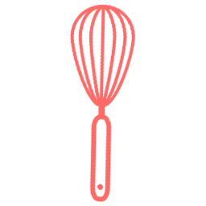

<ion-view view-title="Ingredients" ng-controller="SingleController"><!--creation d'une vue-->
    <ion-content scroll="false"><!-- permet de rendre la  vue non scrollable-->
        <!-- BACKGROUND GAUFRE -->

        <section class="page-ingre">

            <div class="bg-ingre ingre">
                <a class="boutonRetour button icon-left ion-chevron-left button-clear button-ligth ion-ios-arrow-thin-left" ng-click="backView()">
                </a>
                <h2 class="text-center">{{single.titre}}</h2>
            </div>

            <div class="row resume">
                <div class="col col-30 col-offset-10">
                    <button class="button-light button-clear ion-ios-heart-outline pull-right"></button>

                </div>
                <div class="col col-20">
                    <p class="text-resume">{{single.nbPersonne}} pers.</p>
                </div>
                <div class="col col-40">
                    <p class="text-resume">{{single.temps}} min de préparation</p>
                </div>
            </div>


            <div class="content">
                    <h3 class="text-center">INGREDIENTS</h3>
                    <div class="row content">
                        <div class="col-10"></div>
                        <div class="col-80">
                            <ion-item ng-repeat="ingredient in ingredients track by $index" ng-if="ingredient">
                            <div class="row content-detail">
                                
                                <p>{{ingredient}}</p>
                            </div>
                            </ion-item>
                        </div>
                        <div class="col-10"></div>
                    </div>
            </div>
                <a ui-sref="sucre-etape" class="start"> COMMENCER </a>
            </div>

        </section>

        <ion-tabs class="tabs-icon-top " ng-controller="TabsCtrl">
            <!-- Dashboard Tab -->
            <ion-tab title="Home" icon-off="ion-ios-home-outline" icon-on="ion-ios-home" href="#/homepage">
                <ion-nav-view name="tab-homepage"></ion-nav-view>
            </ion-tab>

            <ion-tab title="Favoris" icon-off="ion-ios-heart-outline" icon-on="ion-ios-heart" href="">
                <ion-nav-view name="tab-homepage"></ion-nav-view>
            </ion-tab>

            <!-- Sel Tab -->
            <ion-tab title="Sel" icon-off="ion-ios-nutrition-outline" icon-on="ion-ios-nutrition" href="#/sel">
                <ion-nav-view name="tab-sel"></ion-nav-view>
            </ion-tab>

            <!-- Sel Tab -->
            <ion-tab title="Sucre" icon-off="../img/icon/cake.png" icon-on="../img/icon/cake.png" href="#/sucre">
                <ion-nav-view name="tab-sel"></ion-nav-view>
            </ion-tab>

            <ion-tab title="Compte" icon-off="ion-ios-person-outline" icon-on="ion-ios-person" href="">
                <ion-nav-view name="tab-sel"></ion-nav-view>
            </ion-tab>
        </ion-tabs>

    </ion-content>
</ion-view>